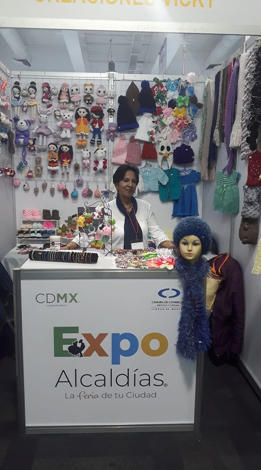

Nosotras
Desde el 2019 Mujeres Artesanas Cuajimalpa han servido a la comunidad.
Buscanos en nuesto siguiente evento.
Eventos
En la explanada de Cuajimalpa y otras Alcaldias
- Bordados: Contamos con una gran variedad de articulos bordados, con gustos para chicos y grandes.
- Bisuteria: Tenemos diversa cantidad de joyeria, tanto tradidional y tambien con tendencia.
- Tejidos: Desde unos zapatitos para bebe, hasta capas para adultos,contamos con una gran variedad de prendas artesanales.
Comunicate con nosotros para mas informacion.
Nuestra filosofia
Creemos que todas las mujeres tiene la capacidad de crear algo increible, que todas tiene talento y que ese talento genera ingresos. Es por eso que hemos impulsado a las mujeres artesanas de nuestra Alcaldia.